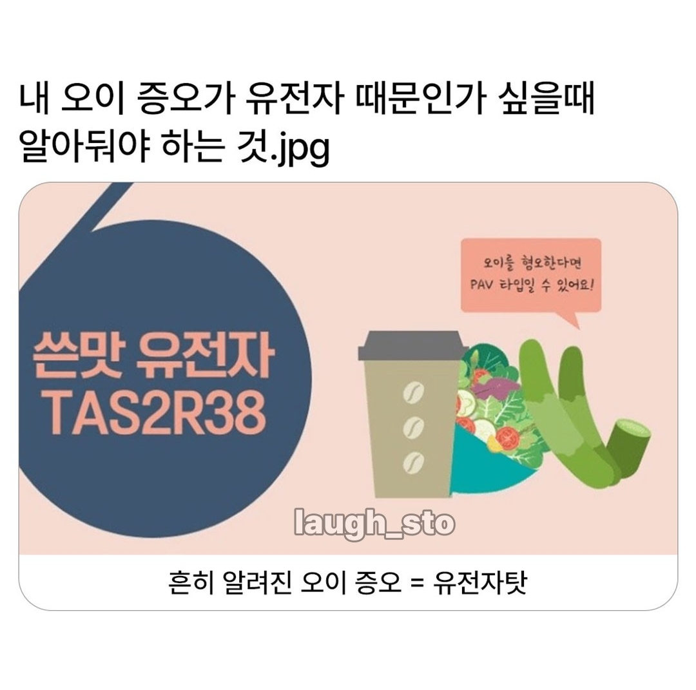

내말이..........법으로 김밥에 오이 못넣게 했으면 좋겠슴
편식 하는거 맞음 근데 편식 거르고 먹으면 토함 냄새가 너무 역함
난오이는 적당히먹긴한데
편식좀 할수도있지 뭐
오이소박이 땡기네 츄릅
오이 속이 싫어 씨있는 부분
겉은 좋아 껍질도 좋아
맛없다 이런게 아니고
그냥 냄새맡으면 역겨움
입에 넣으면 구역질나와
게이라서 못먹는거임
오이못먹는남자=게이
닥쳐! 오이 주제에
오이조아
오이 향긋하잖아 ㅋㅋ
나는 반대로 표고 버섯향을 못참겠드라
못참고 다먹어버리노
냄새만 안나면 잘 먹음. 피클이나 잘게 썰어놓은 오이 잘 먹음. 오히려 식감은 좋아하는편.
통오이 먹으면 바로 토함.
그동안 얇은 오이만 한조각씩 먹다가 얼마전에 오이 먹어도 괜찮네 싶어서 오이소박이 아무 생각 없이 먹었는데 바로 싱크대 뛰어가서 토했다...
편식할래요
난 감이 곶감, 단감, 홍시 다 도전해봤는데 전부 너무 떫어서 못 먹음.
망고도 떫어서 한두입 이상은 못먹겠더라.
이건 왜 이런거지. 떫냐?
오이 절대못먹고 아메리카노 써서 못마셔서 한강아메 만들어 먹어야 되고 술 당연히 못마시는데 초콜릿은 먹을줄 암
나 치약 매워서 많이짜질 못하는데 이것도 해당되나
넌 멘톨알러지일수도 있음. 다른 멘톨류 이클립스같은거에도 과민하고 특히 파스에 피부병변있나 확인해봐. 나 멘톨알러진데 치약이나 가글에 통증 개심하고 파스붙이면 몇시간만에 짓무름
아니 쓴맛이 아니라 생선비린맛이 나잖아
오이에서?
오 난 이상한 약품 냄새 나서 뱉어버리는데
???
냄새때문인데 뭔 개소리를 써놨노